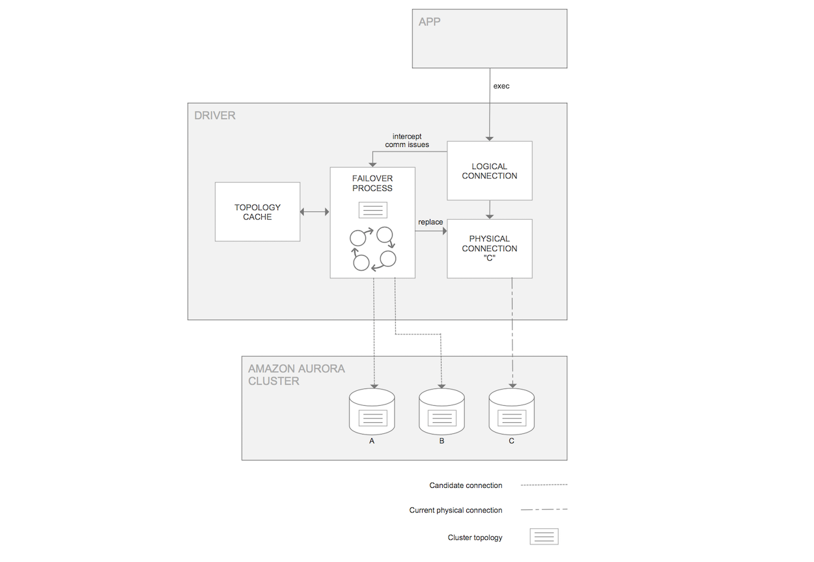

Developers use software libraries, known as database connectivity drivers (or simply drivers), to connect
applications to databases. A driver converts SQL queries in an application into a protocol language to
communicate with the database and returns query results to the application. The AWS JDBC Driver for PostgreSQL
is optimally configured to allow an application to connect to and take advantage of the features of clustered
PostgreSQL database deployments.
Supporting Fast Failover for Amazon Aurora
In Amazon Aurora, failover is a mechanism by which the
database automatically repairs the cluster status when a primary DB instance becomes unavailable. During failover,
Aurora elects a database replica to become the new primary DB instance, so the cluster can provide
maximum availability to a primary read-write DB instance.
Before a replica instance can be promoted to the primary DB instance, the DNS record must be updated in order
to properly direct the connection. This process can take up to several minutes. The AWS JDBC Driver for
PostgreSQL is designed to coordinate with this behavior in order to provide minimal downtime. It achieves this
by maintaining a cache of the PostgreSQL cluster topology and each instance's role (replica or primary DB
instance). This topology is provided via a direct query to the PostgreSQL database, providing a shortcut to
bypass the delays caused by DNS resolution. With this knowledge, the AWS JDBC Driver for PostgreSQL can more
closely monitor the database cluster status so that a connection to the new primary DB instance can be
established as quickly as possible.

The figure above provides a simplified overview of how the AWS JDBC Driver for PostgreSQL handles an Amazon
Aurora failover encounter. Learn more>>